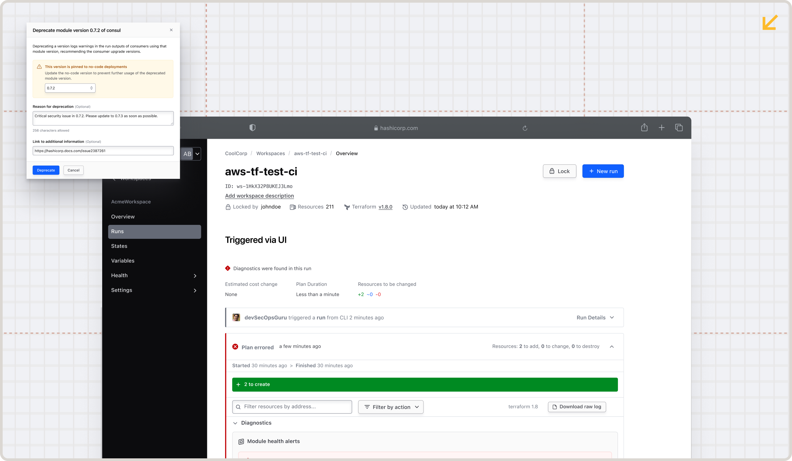
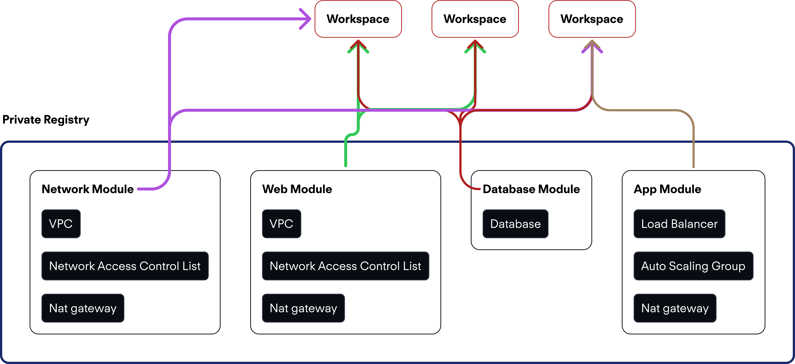
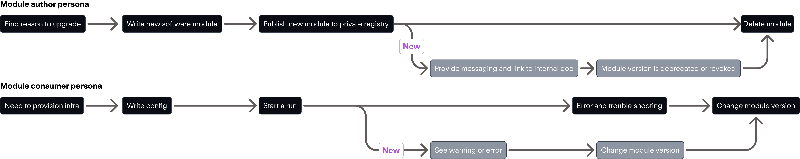
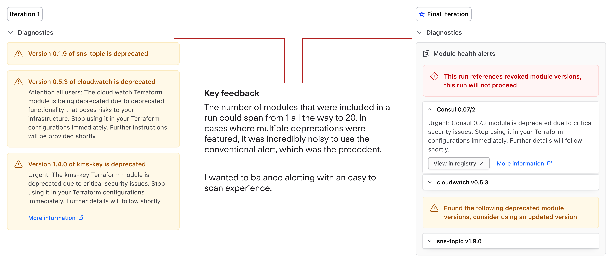
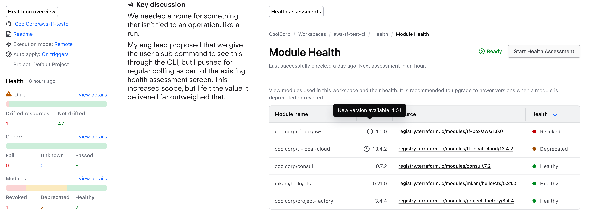
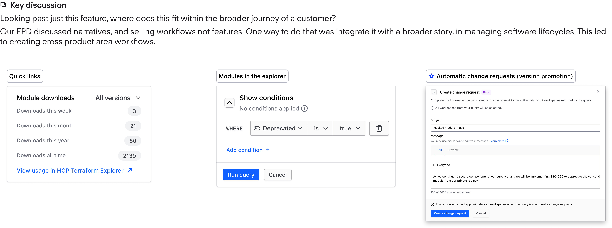
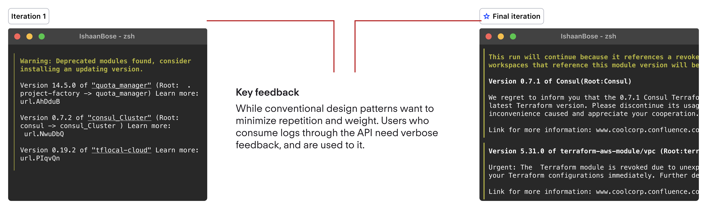

Ishaan Bose
Ishaan Bose
Enter the password to access


Modules are reusable, self-contained packages of Terraform configuration. You define one once and use it many times, which keeps infrastructure code DRY (Do not Repeat Yourself). They come in two flavors: public, pulled from the Terraform registry, and private, managed inside an organization.

Terraform modules, like any software, evolve through versioning (think iOS 17 to 18). Organizations release new versions to address security, bugs, and improvements. The challenge is getting users to upgrade. Different roles and skill levels create gaps in how people experience these updates.
Core personas
Arthur the module author
Arthur is the Terraform expert in their company, and releases modules, which are predefined reusable packages of software. He distributes this to module consumers.
Coco the module consumer
This individual is an application developer for their company, and uses Terraform to provision infrastructure. They consume modules and use it through a Terraform Run.
The separation in these two personas is what makes this tricky. Lets consider the following scenario:
Scenario
Arthur the module author realizes that a module has an issue with security vulnerabilities in the cloud provider
so he then creates patch version
then he publishes to the private registry in their organization
Now he needs to communicate to the 1k end users in the organization ← Friction
Coco the module consumer needs to read message ← What happens if they never do this?
and change the module version in their terraform configuration
There are two core ways to approach this problem currently, which was told by customers. Each have downfalls and are indicative of the level of cloud maturity of the customer.
Customer solutions
Arthur the module author is frustrated with this problem, so what do they do?
TF Native solutions
Pain Point: Auditing modules is lost with deletion, others not scale
Bespoke
Pain Point: Requires extra customer effort. Slows adoption and lacks scalability.
My EPD team approached this by examining the gap between module authors and module consumers. To build empathy, we joined customer calls to see how organizations were truly structured.
I initially assumed both personas sat on the same DevOps or cloud infra team. In reality, authors were usually platform engineers on central SRE teams, while consumers were app developers or SWE’s seeking quick, self-serve infrastructure. This revealed how communication could easily break down. These groups often never interacted directly, making alignment much harder.
Module authors need a native way in Terraform to communicate to module consumers for situations when you need to upgrade or migrate your module.
These customer calls and the problem statement helped us to devise some basic user flows. The parts of the flow that was highlighted are "new" areas.

From here it was clear that we needed to build something within Terraform to help this core persona of the module author. To help understand how to create a solution we had to decompose the problem a little bit more.
Challenge: How might we give information in context in a way that is noisy enough to notice, but not overwhelming?
Decision: Use shortened accordions, with alerts to draw attention


Challenge: Users don’t always kick off runs in a set cadence, and sometimes informing them there might be too late. How might we provide information more statically?
Decision: 2 new indicators of module health that is decoupled from the run was included.


Challenge: What are broader Jobs To Be Done that encompass these workflows, how do they fit in?
Decision: Module health data included in the explorer, greater change request flows.


Challenge: The CLI is often the golden workflow for users, how can we create a minimal viable design for the CLI?
Decision: Use verbose messaging in the CLI, and summarized in the UI.


This project tackled a problem many organizations face at scale. Hearing how mature organizations solved it in bespoke ways, and seeing where our solution could help, was a highlight. The core skill I built was listening intently and tuning through the noise, which matters when a research effort this size throws off an overwhelming number of signals.
Another milestone was seeing this unveiled at HashiConf, HashiCorp’s annual user conference. You can check out the recording here!